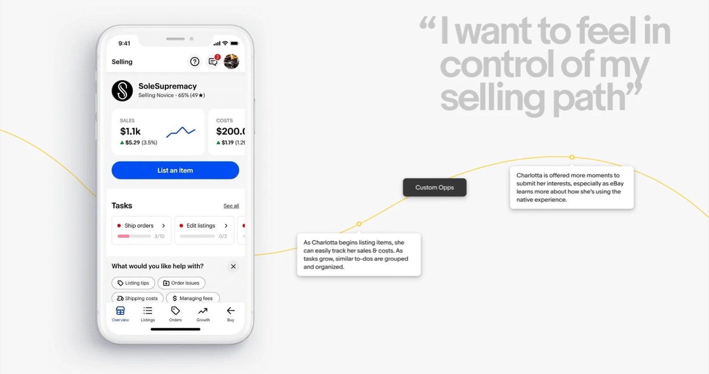

eBay
- Role Director of Product Design, Seller Experience. 2022 to 2024.
- Team 25 designers, 2 researchers, 2 design program managers.
- Work Seller experience end to end, web and mobile, consumer to enterprise, on a marketplace of roughly $73 billion annual GMV and 132 million active buyers. eBay's first generative AI feature.
eBay's first generative AI feature
Most listings had no description. Between two similar items, buyers almost always chose the one that did. My team designed and shipped the Magical Listing Tool with eBay's AI team, concept to launch, September 2023. It drafts title, description, and item specifics. The first of a set of tools that take the effort out of listing: a photo, or a video with voice-over, and the rest follows.
30%of daily US app sellers tried it in the first weeks 95%+of those kept the AI draft, with or without edits 80%+CSAT

The mobile seller sprint
Small businesses, 6 percent of sellers and 42 percent of revenue, lived on phones, where eBay trailed. I ran one of three Lighthouse sprints with Product, Marketing, and Engineering: three personas, journeys overlaid to find shared territory, concepts that graduate a seller from novice to pro. The vision was one flexible system, because a business grows. The concepts stay internal. The method is the point.
I got design into Product's six-month planning cycle, shaping roadmaps before they were set.